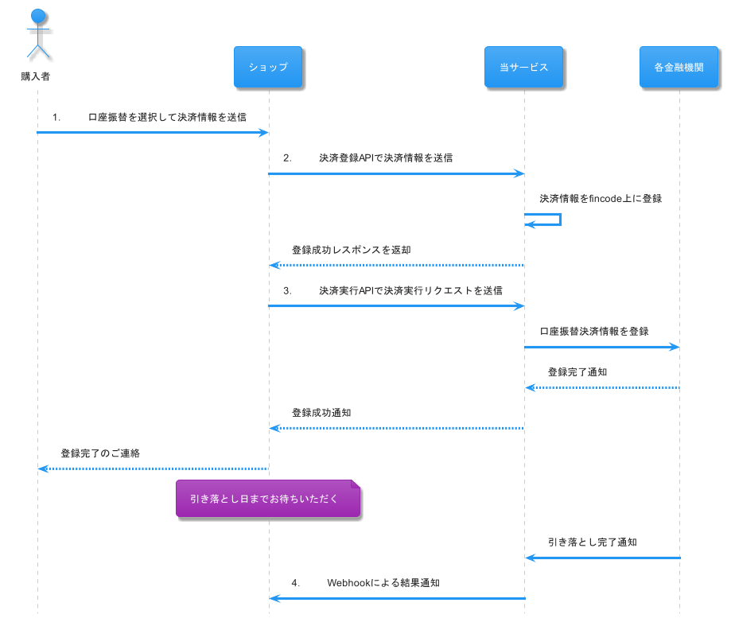
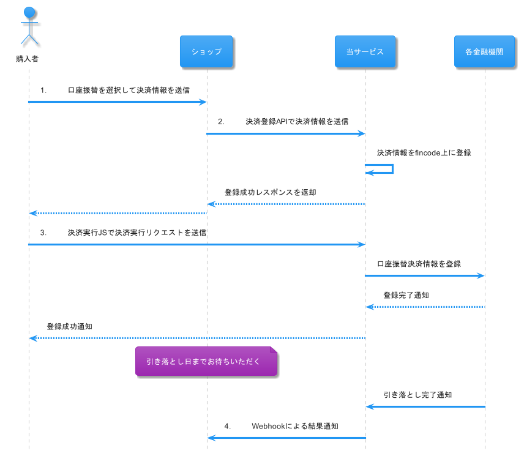

执行扣款处理
使用支付执行 API
预先登记的账户信息在 fincode API 中作为“支付方式（Payment Method）”处理。请求登记支付时，可通过指定金额和支付方式发起扣款。

- 买家选择银行账户自动扣款作为支付方式。
- 商户调用 fincode 的登记支付接口。
- 商户调用 fincode 的执行支付接口。fincode 登记扣款信息，以便按请求参数
target_date指定的日期扣款。 - 扣款处理完成后，fincode 通过 Webhook 通知商户服务器处理结果。
使用支付执行 JS
使用支付执行 JS，可以轻松地在前端应用中实现银行账户自动扣款处理。

- 买家选择银行账户自动扣款作为支付方式。
- 商户调用 fincode 的登记支付接口。
- 商户调用 fincode 的支付执行 JS。fincode 登记扣款信息，以便按请求参数
target_date指定的日期扣款。 - 扣款处理完成后，fincode 通过 Webhook 通知商户服务器处理结果。
确认扣款结果
可通过 Webhook 通知（payments.directdebit.complete）或获取支付信息返回的result_code值判断扣款结果。各结果的说明如下。
| result_code | 扣款结果 | 说明 |
|---|---|---|
| 0 | 扣款成功 | 已成功扣款。 |
| 1 | 余额不足 | 账户余额不足，扣款失败。 账户本身已正常登记，补足余额后下次即可扣款。 未能扣除的金额需要再次发起扣款，或通过其他方式向客户收取。 |
| 2 | 无存款账户交易 | 因账户已销户等原因扣款失败。 申请书或 fincode 中的登记有误时，也可能返回此结果。 必须更正已登记的账户信息（重新寄送申请书并在 fincode 中重新登记）。 |
| 3 | 买家原因 | 因客户向金融机构申请停止扣款等原因，扣款失败。 必须更正已登记的账户信息（重新寄送申请书并在 fincode 中重新登记）。 如果客户不清楚原因，需由客户向金融机构咨询。 |
| 4 | 申请书未送达或有问题 | 金融机构尚未收到申请书，或申请书有问题。 如果属于未送达且申请书已寄出，金融机构处理完毕后即可扣款。 视金融机构的处理时间而定，扣款结果可能先于 fincode 发出的申请书问题通知告知申请书有误。 此扣款结果代码无法说明具体原因，请等待另行通知。 |
| 8 | 商户原因 | 因商户方面的原因扣款失败。 详情请联系 fincode。 |
| 7、9 | 其他原因或数据错误 | 因其他原因扣款失败。 详情请联系 fincode。 |